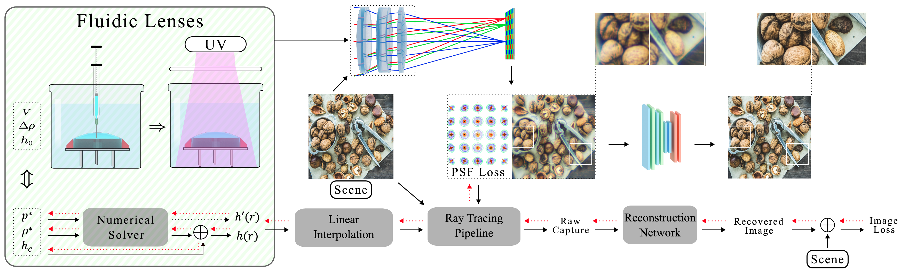

End-to-end Optimization of Fluidic Lenses
Na Mulun, Hector A. Jimenez Romero, Xinge Yang, Jonathan Klein, Dominik L. Michels, Wolfgang Heidrich
SIGGRAPH Asia conference track, 2024.

Our end-to-end design process for cheap and customizable fluidic lenses. Left to right: Lenses are formed from liquid resin that is injected into a ring mold and hardened with UV light. A scene is imaged through the lens via differentiable ray tracing, and subsequently reconstructed through a neural network. Different loss functions are evaluated on the point spread function and final image and back propagated through the whole pipeline to jointly learn the network parameters and lens design parameters.
Abstract
Prototyping and small volume production of custom imaging-grade lenses is difficult and expensive, especially for more complex aspherical shapes. Fluidic shaping has recently been proposed as a potential solution: It makes use of the atomic level smoothness of interfaces between liquids, where the shape of the interface can be carefully controlled by boundary conditions, buoyancy control and other physical parameters. If one of the liquids is a resin, its shape can be "frozen" by curing, thus creating a solid optical element. While fluidic shaping is a promising avenue, the shape space generated by this method is currently only described in the form of partial differential equations, which are incompatible with existing lens design processes. Moreover, we show that the existing PDEs are inaccurate for larger curvatures. In this work, we develop a new formulation of the shape space lenses generated by the fluidic shaping technique. It overcomes the inaccuracies of previous models, and, through a differentiable implementation, can be integrated into recent end-to-end optical design pipelines based on differentiable ray tracing. We extensively evaluate the model and the design pipeline with simulations, as well as initial physical prototypes.
Paper and Video
Paper [Jimenez2024E2EFLuidic.pdf (~14MB)]
Supplementary [Jimenez2024E2EFLuidic_supp.pdf (~3MB)]
Bibtex [acm_3680528.3687584.bib]